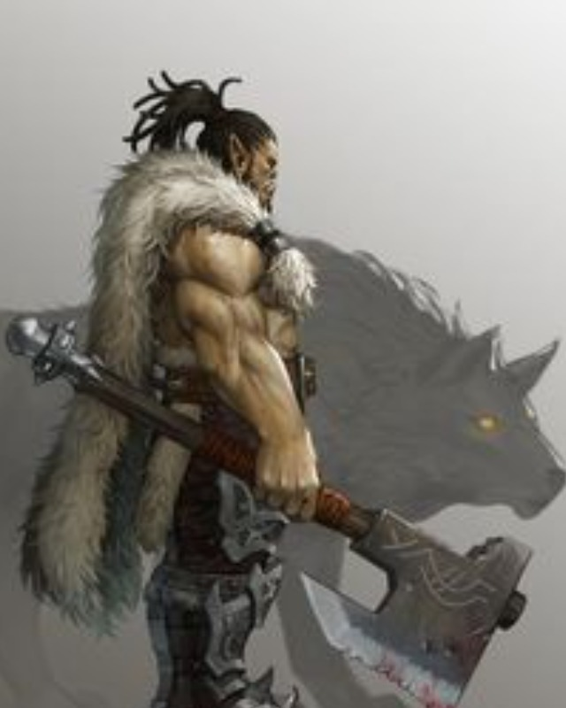

Kord
Barbarian / pierwsza linia / presja
Dawaj druzynie bezpieczna przestrzen. Zatrzymuj ludzi Odrana, zanim ucisza swiadkow albo uciekna z relikwiarzem.
AthleticsIntimidationSurvivalPerception
Atrybuty STR +3, DEX +1, CON +4, INT +0, WIS +1, CHA +0
Biegłości Perception trained; Fort expert, Ref trained, Will expert
Bronie i pancerz simple/martial/unarmed trained; unarmored/light/medium trained
Skille trained Acrobatics, Athletics, Intimidation
Skille terenowe Nature, Survival
Rola testów siła, zastraszenie, blokowanie pościgu, front
Skille
- Athletics: wywazanie, przeszkody, zatrzymanie przeciwnika.
- Intimidation: straznicy Odrana, presja, kapitulacja.
- Survival/Nature: pomoc w drodze i terenie.
- Perception: inicjatywa i wykrywanie zagrozen.
Umiejetnosci
- Sudden Charge: szybkie wejscie w kluczowy cel.
- Giant Instinct: bardzo mocne obrazenia podczas Rage.
- Orc Ferocity: raz dziennie utrzymuje cie na nogach.
- Hefty Hauler: belki, drzwi, mechanizm mlyna.
Taktyka
- Wchodz pierwszy, ale nie samotnie.
- Blokuj droge do Freyi i Virelli.
- W mlynie priorytet: straznik najblizej Tovina.
- W krypcie zatrzymaj Odrana, jesli druzyna ma dowody.
Sledztwo
- Zmus ludzi Odrana, by przestali przeszkadzac.
- Intimidation dziala najlepiej, gdy druzyna ma dowody.
- Fizyczne rozwiazania pomagaja przy mlynie.
- Nie niszcz dowodow, zanim Freya lub Cedric je obejrza.
Pytania do NPC
- Do straznikow: "Kto wam placi za pilnowanie mlyna?"
- Do Odrana: "Czemu boisz sie kaplicy, skoro podobno boisz sie tylko Miry?"
- Do Serai: "Kogo mam zatrzymac, zeby wioska przezyla?"
Motywacja: Kord nie znosi panow, ktorzy chowaja brudne rece w czystych rekawicach.